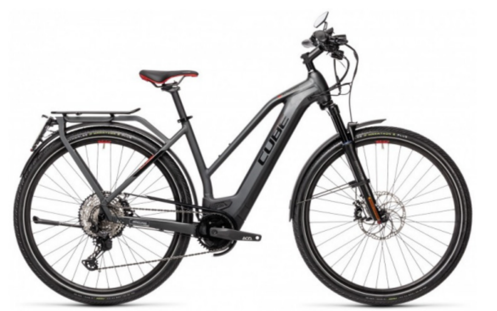
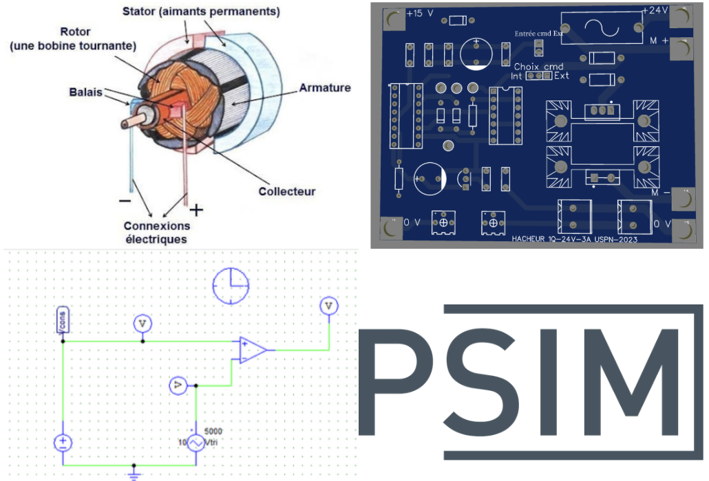
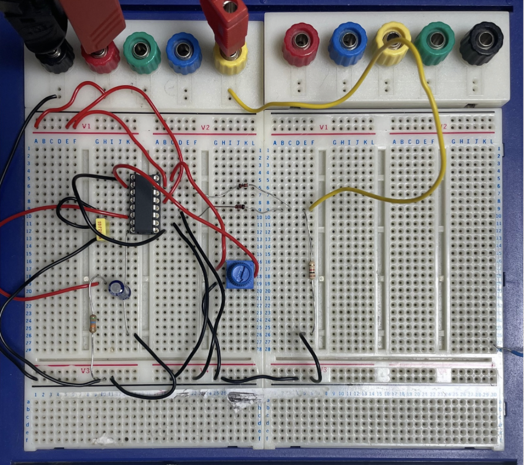
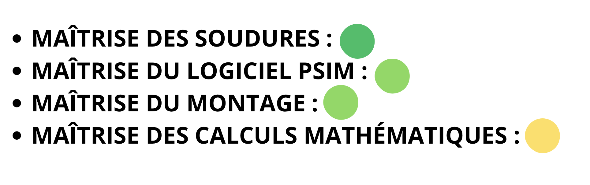
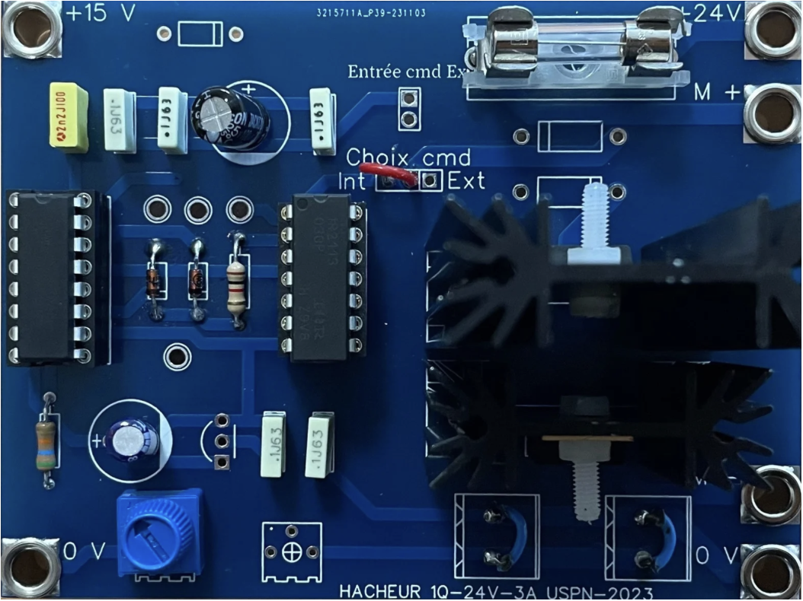

Contexte :
- Le projet portait sur la conception et l'étude d'un système de commande pour motorisation électrique. L'objectif principal était de développer une solution permettant de piloter avec précision la vitesse d'un moteur, simulant ainsi le fonctionnement d'un vélo à assistance électrique.
Logiciels et outils :
- Le projet a débuté par l'étude théorique d'un moteur à courant continu, suivie de simulations sur le logiciel PSIM pour dimensionner précisément les composants et les couples RC. Après avoir validé le montage sur plaque d'essai pour tester le comportement réel du circuit, j'ai finalisé la réalisation par l'implantation et la soudure des composants sur une carte électronique dédiée.
Ressenti :
- L'expérience de mes deux projets précédents m'a vraiment servi à mieux gérer mon temps et mon travail cette fois-ci. J'ai pu anticiper une marge de sécurité, ce qui nous a permis de finir le projet largement dans les temps sans stress. La grande nouveauté pour moi a été la soudure, une technique que j'ai apprise et maîtrisée très rapidement pour monter la carte. Ce projet m'a aussi rendu plus autonome : comme on était moins accompagnés par le professeur, on a dû faire nos propres recherches et collecter les informations techniques par nous-même pour faire avancer le montage et garantir son bon fonctionnement.
Auto-Évaluation
Conclusion :
- Ce projet s’est déroulé exactement comme prévu et nous avons réussi à le finaliser dans les délais impartis. L'expérience de mes projets précédents m'a vraiment aidé à mieux gérer mon temps et à anticiper les étapes de fabrication. Au-delà du résultat technique que vous voyez sur cette carte, ce travail m'a permis d'acquérir de nouvelles compétences concrètes comme la soudure et l'exploitation de documentations techniques. J'ai également gagné en autonomie.